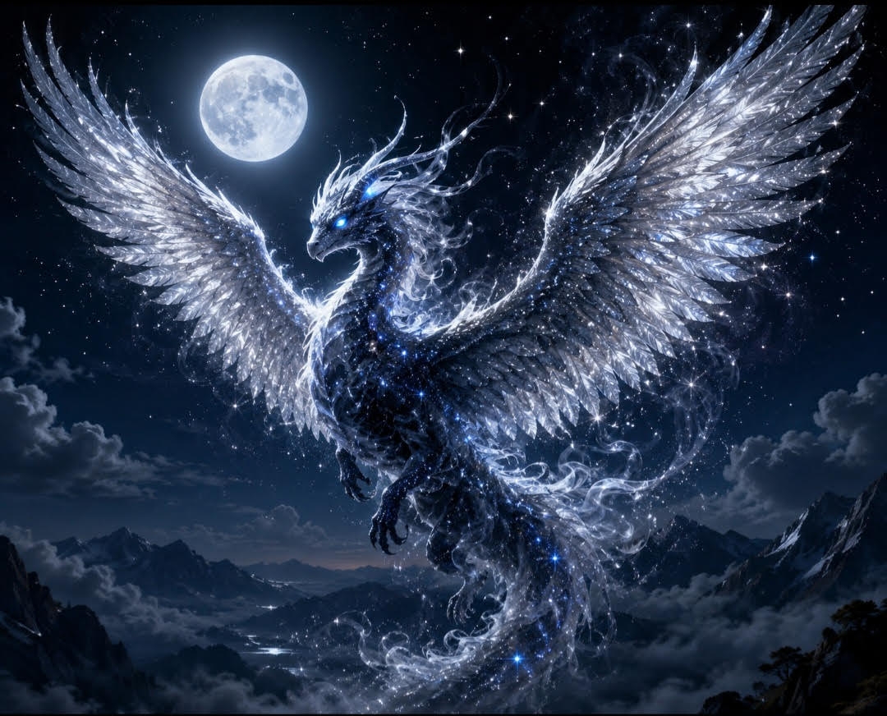

Lunary possui asas gigantes cobertas por penas prateadas que brilham no escuro. Seus olhos azuiz iluminam a noite e sua pele parece feita de fumaça misturada com estrelas.
Lunary controla os segredos das pessoas, e protege a floresta encanta e cria ilusões mágicas para afastar criaturas malignas
Ela vive em montanhas escondidas acima das nuvens dentro de um castelo de cristal iluminado pela lua
Seu maior poder é criar portais de luz lunar que permitem viajar para qualquer lugar do mundo.